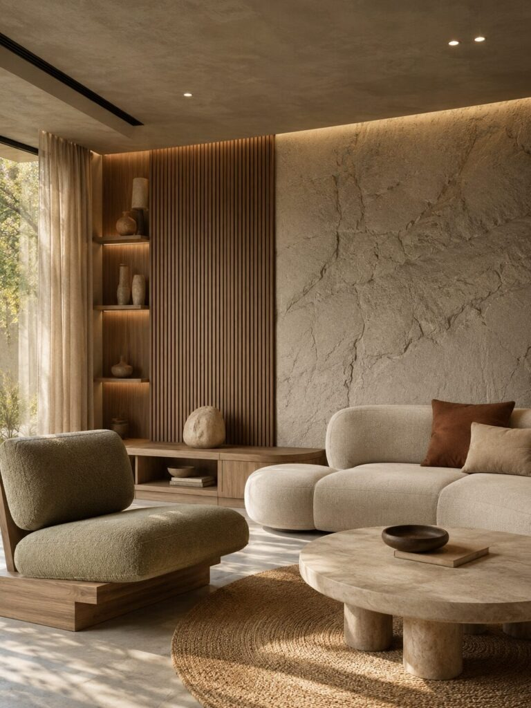
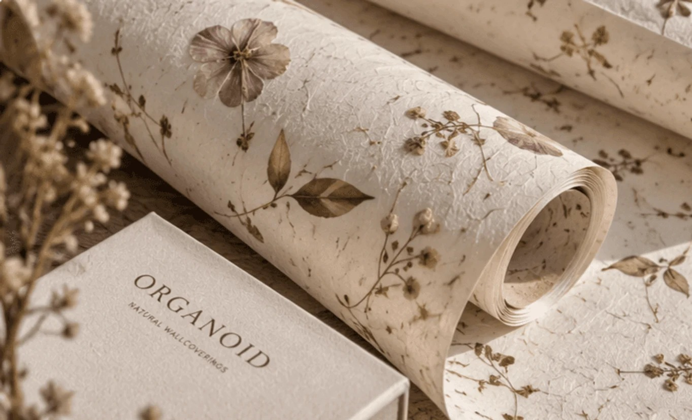
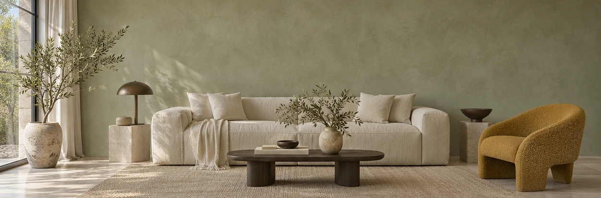
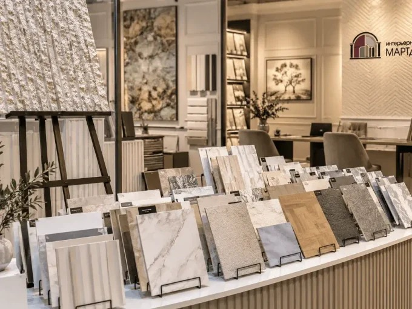
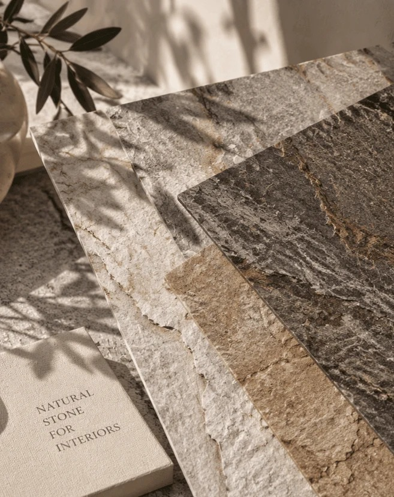
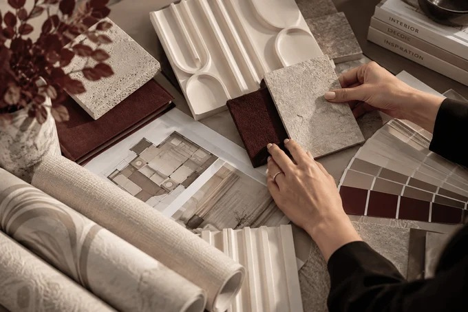

Дарья
Менеджер-комплектатор
Подберёт, как сочетать материалы в вашей комнате.

Интерьерный салон в Ростове-на-Дону
Обои, панели, лепнина и краски. Сравним на образцах в салоне.

В МАРТдекоре можно приложить образец к мебели и посмотреть, как меняется оттенок при вашем освещении. Если ремонт ещё идёт, оплаченные материалы можно временно оставить на складе салона.


Принесите фото комнаты или чертёж. Приложим обои к выкрасу, подберём профиль и посчитаем, сколько материала потребуется на вашу стену.
Комплектатор предложит варианты под вашу комнату и бюджет.
Сравните цвет и рельеф. Уточните, какой образец можно взять на объект.
Менеджер согласует количество, наличие и доставку, затем выставит счёт.

«Распечатали огромную фреску с фото ночного города, качество хорошее, сроки выдачи соблюдены».
«Отличный выбор материалов, вежливые сотрудники, отличная поддержка, есть возможность дистанционного заказа».
«Замечательные специалисты. Индивидуальный подход. Нашли то, что уже давно сняли с производства. Относятся к делу неравнодушно».
О салоне
В шоуруме WEST можно встретиться с комплектатором, посмотреть образцы и собрать материалы для проекта.
Менеджер-комплектатор
Подберёт, как сочетать материалы в вашей комнате.

Менеджер-комплектатор
Поможет выбрать панели, карнизы и молдинги.
Менеджер-дизайнер
Соберёт сочетание цвета и фактур под ваш проект.

По средам в 14:00 в дизайн-центре WEST.
Знакомимся с новыми материалами и обсуждаем, как применять их в проектах.
Да. Можно принести фото, планировку, чертёж или подборку референсов. Комплектатор предложит материалы с учётом стиля и бюджета.
Менеджер уточнит наличие, количество и доставку. После согласования салон выставит счёт.
Да. Салон отправляет материалы транспортными компаниями. Срок и стоимость менеджер уточнит при оформлении заказа.
Возьмите фото комнаты, размеры стены или чертёж. Комплектатор покажет образцы, уточнит наличие и рассчитает заказ.
Ростов-на-Дону, пр. Михаила Нагибина, 30Л
Пн–пт 10:00–19:00
Сб–вс 10:00–17:00